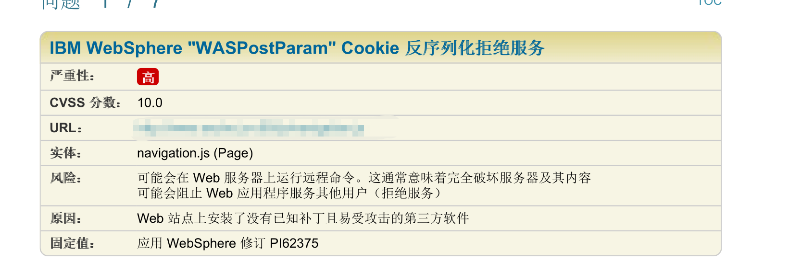
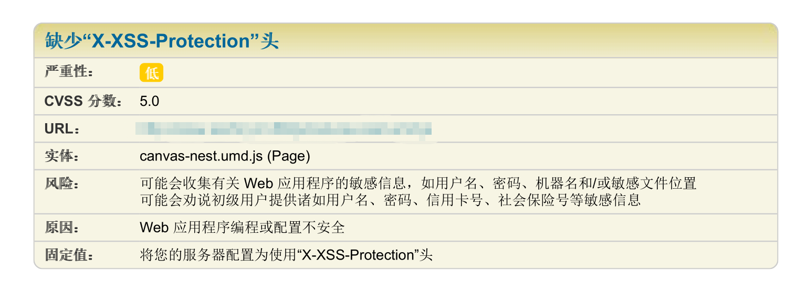
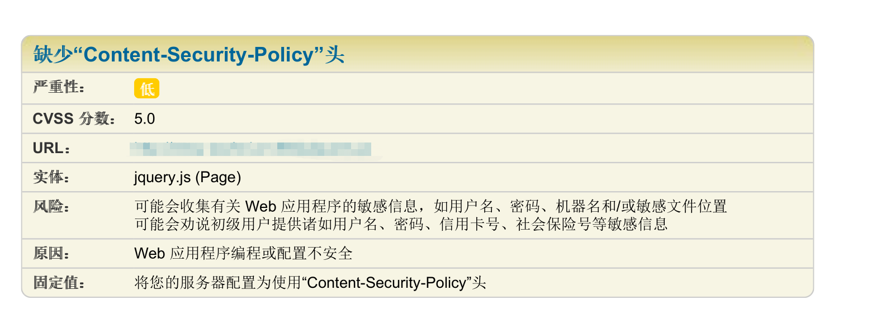

最近一直在做农机的项目，根据测试反馈回来的问题做了关于服务器防护的一些问题。
测试问题反馈以及解决方式如下：

这个问题是由于服务器安装了安全狗导致的，卸载安全狗可解决这个问题。

这个是由于服务器未做xxs防护所致的。我的解决方法是在apache的httpd-conf加入以下代码：
1 <IfModule mod_headers.c>
2 Header set X-XSS-Protection "1; mode=block"
3 </IfModule>

这个是因为缺少了csp安全所造成的，所以我们加上csp安全的就好了
1 <IfModule headers_module>
2 RequestHeader unset DNT env=bad_DNT
3 Header set Content-Security-Policy "default-src 'self'; script-src 'self' 'unsafe-eval' 'unsafe-inline' *.amap.com *.bdjsi.com:* *.google.cn:* ; object-src 'self'; style-src * 'unsafe-inline' ; child-src https: ; font-src 'self' *.bdjsi.com:* *.google.cn:* *.gstatic.com; img-src 'self' 'unsafe-inline' data: *.bdjsi.com:* *.google.cn:* *.gstatic.com *.gstatic.cn *.goodlinlin.com *.autonavi.com *.amap.com ; connect-src 'self' *.amap.com ; worker-src blob: "
4 </IfModule>参考链接：https://www.cnblogs.com/heyuqing/p/6215761.html
http://www.ruanyifeng.com/blog/2016/09/csp.html
还有就是单位大佬教的两招：
ServerTokens Prod 禁止显示或隐藏apache 版本号
ServerSignature Off 隐藏php版本号